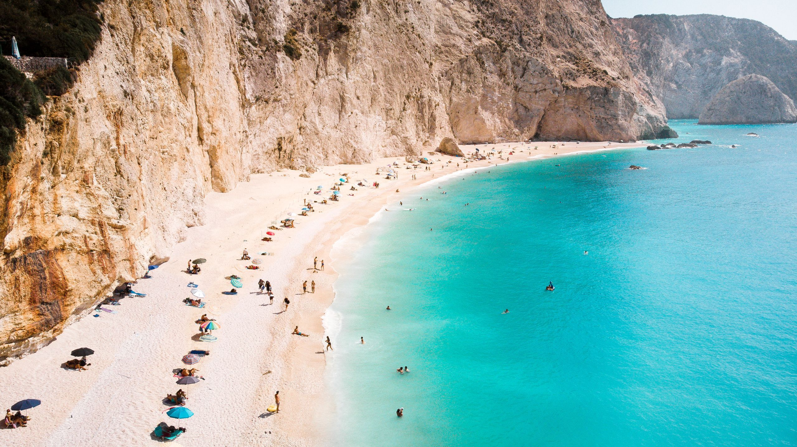

Map
Lefkada is a beautiful, quiet island located in the Ionian Sea, off the western coast of Greece.
Over the years, it has been my family's go-to spot whenever we go to Greece. We usually go all over the place,
but we always end up in Lefkada at some point. The island is connected to the mainland by a floating bridge. The bridge
rises and falls to allow boats to pass through, and cars to drive to the island. Without the floating bridge, you could only get there by boat.

Kathisma Beach
Lefkada is known for its beautiful beaches, icy blue waters, large waves, and fantastic Taverna food. There was one time when I was very young, at Kathisma Beach,
my brothers were forcing me to go into the water, even though there were these giant roughly 12-foot waves. I was terrified, but I went in anyway.
I maybe lasted about 45 seconds, until a giant wave smacked me into the ground, and sucked me into the water. I had to swim as hard as I could in order to not
get pulled deeper. I thought I was going to genuinely drown. Luckily, I am a good swimmer, and made it out. It's safe to say that I did not go back into the
water that day.